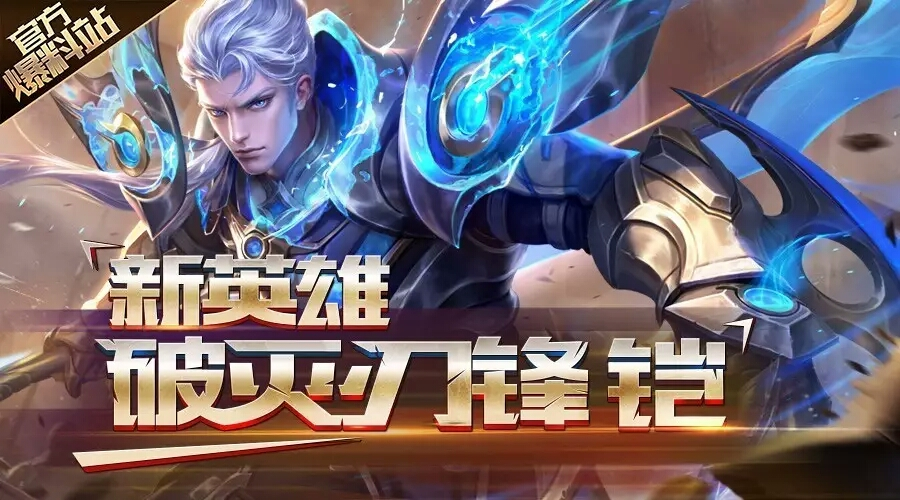

新英雄爆料 | 露娜的兄长就是他！
喜欢本文章的小召唤师们，请双击评论666。。
妲己宝宝知道在王者峡谷当中有着很多的露娜党召唤师，毕竟露娜可以展示各位闪电般的手速与骚气的操作嘛！有玩过露娜的召唤师一定听过露娜那句“你曾经与我的兄长较量过吗？”的台词~
当听到这句台词的时候，召唤师心里一定有疑问，露娜的兄长是谁？
今天妲己宝宝就来问大家揭开这个谜题！兄长出来吧！
破灭刀锋-铠
设计思路
[无情，强大，身世成谜]
在王者峡谷的战斗中，一部分英雄擅长战斗，精通各类武器与格斗技巧；另一部分英雄擅长法术，能够使用眼花缭乱的魔法。 我们曾经设想，会不会有一些家族，在拥有超强剑技的同时也能展现出对魔道的亲和特征。他们拿着精美的武器走上战场，成为这片天空中最为耀眼的星星。 铠正是出生自这样的家族。 由于剑与魔法两种强大力量无法完全共存，或者一些其他的原因，来到长城，被花木兰捡到的铠，似乎已经完全忘却了魔道家族的力量，但当战斗进行到关键阶段时，这位安静的异国绅士又能从虚空中召唤那套闻名于长城内外的铠甲...... 那套明显需要使用非凡魔力才能驱动的上古神器——虽然并不能实际维持多长时间——却已经足够凸显两种力量结合的强大！ 就叫他铠吧，既然没有人知道他来自哪里，师从何处...... 这是一位无情的战士，在不展现任何魔道力量时就是王者峡谷最强的单挑者，也许能够与老夫子抗衡也说不定？
技能介绍
结束语
距离新赛季还有1天时间！
召唤师们在本赛季的上分路上遇到过什么有趣的故事？赶紧在下方评论区给宝宝分享吧~